RealPDE
Competition
Scientific ML for Real-world Physical Systems. The first NeurIPS Scientific ML competition centered on data from real physical systems.
Competition launches in:
Bridging the Sim-to-Real Gap
for Deployable Scientific ML
A new competition centered on paired real-world and simulated data, targeting the core capabilities needed for Scientific ML in real physical systems.
Paired Real & Simulated Data
A new dataset of paired real-world trajectories (PIV measurements) and 3D CFD simulations of cross-sectional flow over the NACA4418 airfoil, spanning diverse angles of attack and Reynolds numbers.
Two Complementary Tracks
Sim2Real transfer learning and Long-Term Test-Time Adaptation (LTTTA), targeting the two core capabilities needed for deployable Scientific ML in real physical systems.
Physics-aware Metrics
Beyond point-wise errors: physics-meaningful evaluation including TKE, mean velocity profile, efficiency scoring, and a novel Safe Prediction Score for reliability.
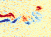
Two Independent Tracks
Running simultaneously. Participate in one or both.
Registration via the team form is required for both tracks (deadline: August 20, 2026). Joining on Codabench alone is not registration: after the registration deadline, Codabench join requests without a submitted form will be denied.
Sim-to-Real Transfer Learning
Bridge the gap between simulated and real-world fluid dynamics data for foil systems. Develop models that fuse rich simulated data with noisy, partially-observed real-world measurements.
- Leverage complete modalities from CFD simulations (velocity fields $u, v$ and pressure $p$)
- Adapt to noise, limited observability, and distribution shifts in real-world PIV data
- Directly addresses industrial applications: aircraft foil aerodynamics, wind turbine blade optimization
Long-Term Test-Time Adaptation
Tackle long-horizon predictive modeling with continuous online adaptation to streaming real-world observations, mimicking real operational deployment scenarios.
- Iterative N-step autoregressive prediction with real-time observation integration
- Counteract error accumulation over extended time horizons
- Allows agent-augmented adaptation (e.g., LLM-based controllers for adaptive update scheduling, memory retrieval, module selection)
- Models real-world scenarios: sensor monitoring during flight, wind turbine performance tracking
NACA4418 Airfoil
Paired Real & Simulated Data
A canonical geometry in aerodynamics and hydrodynamics, with matched experimental PIV measurements and high-fidelity 3D CFD simulations.
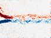
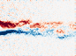
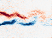
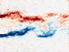
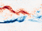
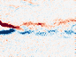
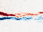
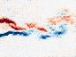
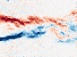
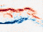
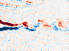
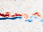
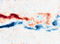
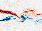
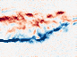
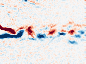
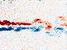
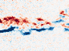
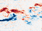
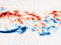
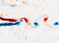
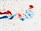
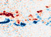
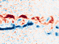
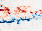
Real PIV vorticity fields across the full operating envelope. Diverging red/blue colormap for $\omega_z$ (red: positive, blue: negative). Resolution reflects the native PIV grid.
Physics-Aware Metrics
A deployment-oriented evaluation protocol with three dimensions: accuracy, efficiency, and safety.
Relative $L_2$ Error
Standard pixel-wise error between predicted and ground-truth physical fields. The core data-fidelity metric.
Turbulent Kinetic Energy (TKE)
Relative $L_2$ error of TKE. Measures how well a model captures velocity-fluctuation energy, a physically interpretable quantity for validating fluid models against real flow behavior.
Mean Velocity Profile Error (MVPE)
Long-horizon evaluation: relative $L_2$ error between time-averaged velocity profiles at probe points (e.g., near the wake region behind the foil).
Time Score (Efficiency)
Sigmoid-shaped normalized runtime relative to numerical solvers ($r = t_{\text{neural}} / t_{\text{numerical}}$). Stays high below a runtime threshold, then smoothly penalizes slower models.
Safe Prediction Score (SPS)
Jointly evaluates physical accuracy, uncertainty coverage, and interval tightness, penalizing intervals that miss the ground truth and rewarding accurate, tight intervals.
Composite Score
Each metric is mapped to a 0–100 scale (higher is better) and combined as a weighted sum across metrics for the final ranking.
Timeline
16 weeks across three phases, culminating at the associated NeurIPS 2026 workshop.
Prizes
Awarded independently per track. Compete in both for double the opportunity.
Cash prizes funded by Uniforce AI Ltd. Top-3 teams in each track will be invited to deliver oral presentations at the competition workshop, and all winning teams will be invited to co-author a joint paper summarizing the competition results.
Rules
Key rules for fair and transparent competition.
| Rule | Details |
|---|---|
| Eligibility | Open to all individuals and academic/industrial teams worldwide. |
| Registration | Every team must complete the registration form (Track 1 / Track 2 forms in the Join menu) by August 20, 2026. Joining the Codabench competition alone does not count as registration: after the registration deadline, Codabench join requests without a matching form response will be denied. |
| Team Size | Maximum of 3 members per team. |
| Submissions | 1 submission per day; 100 total per phase across all participating tracks (per team account). |
| LTTTA Agent Use | Agent-augmented adaptation (e.g., LLM controllers) is permitted in Track 2. Number of agent interaction steps must be explicitly bounded by the protocol, and all agent computation is included in the runtime evaluation. |
| Accounts | One account per team (shared email). Multiple accounts are strictly prohibited and will result in disqualification. |
| Platform | All submissions via Codabench (link goes live at competition launch). Code must be compatible with PyTorch and follow the starting kit interface. |
| Evaluation | Public validation set + private test set (unseen parameters, novel angles-of-attack / Reynolds numbers). |
| Open Source | Winners must open-source their complete solution (architecture, training scripts, hyperparameters) no later than 2 weeks before NeurIPS presentation. |
| Final Ranking | Determined solely by the global composite score on all weighted metrics. |
Getting Started
Everything you need to start competing.
Starting Kit
Jupyter notebooks covering dataset access, baseline implementations (CNO, FNO, Transolver), and submission templates. Released alongside competition launch. RealPDEBench codebase →
Tutorial Webinars
Interactive webinars on competition design, airfoil simulation, and the Codabench submission process. Recordings will be posted here.
Community
Codabench has a built-in forum for Q&A, team formation, and technical discussions. For anything else, reach the organizing team at realpde-competition@googlegroups.com.
Organizers
An interdisciplinary team of 15 organizers from 11 institutions across 6 countries, spanning AI, fluid dynamics, applied mathematics, and Scientific ML, with 1600+ publications in venues such as NeurIPS, ICML, ICLR, and leading fluid dynamics journals.
Lead Organizer
Assistant Professor and PI of the AI for Scientific Simulation and Discovery Lab at Westlake University. Ph.D. from MIT (2019), postdoc at Stanford CS. His work on ML for scientific simulation, design, and generative models has been featured by MIT Technology Review three times.
Contributors
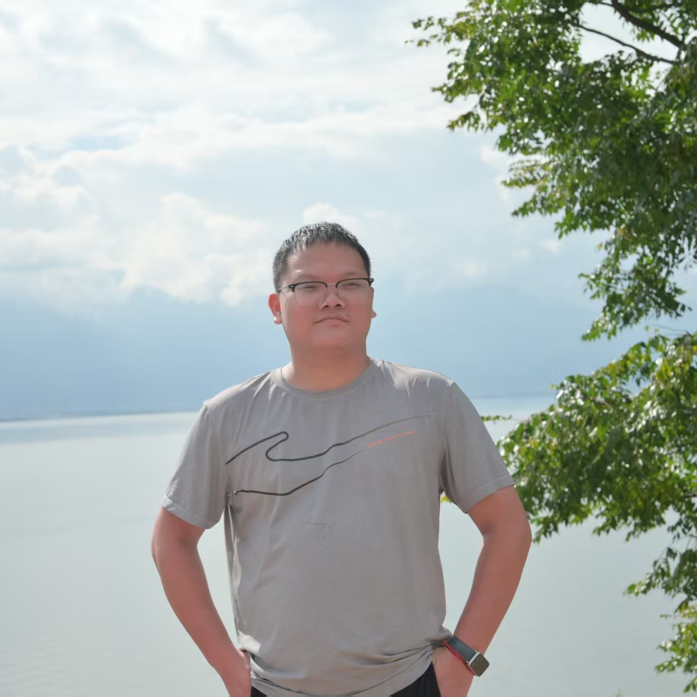
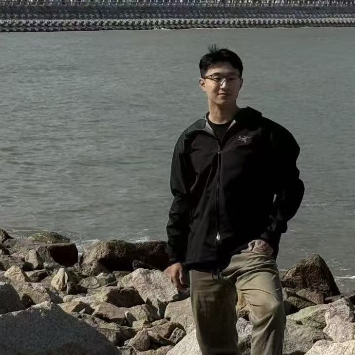
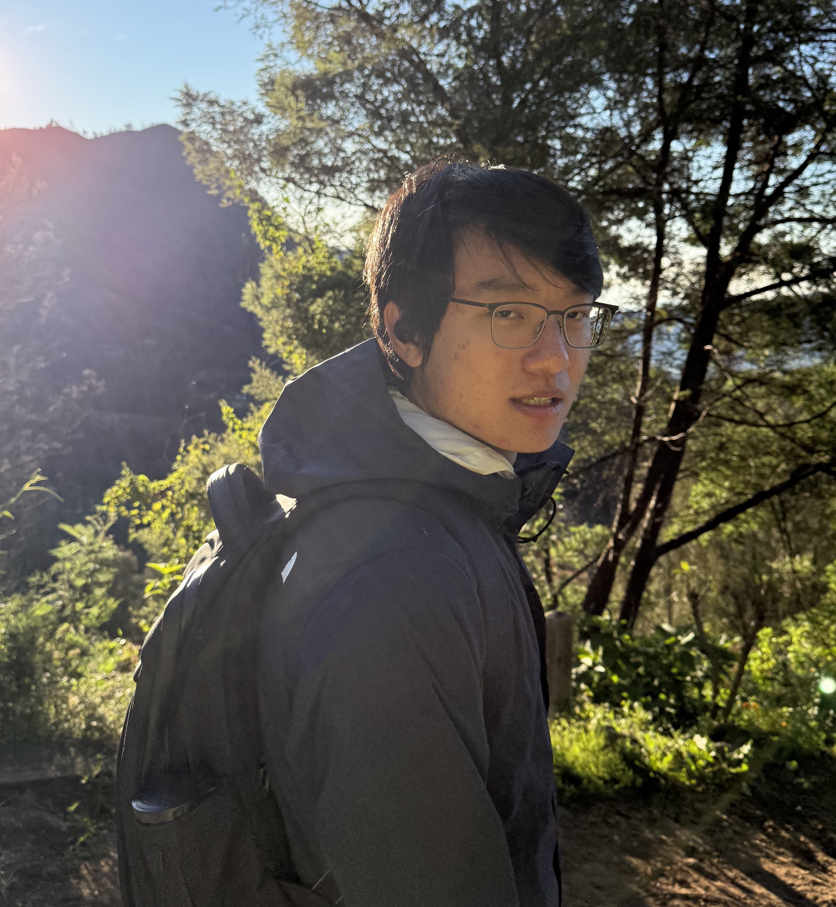
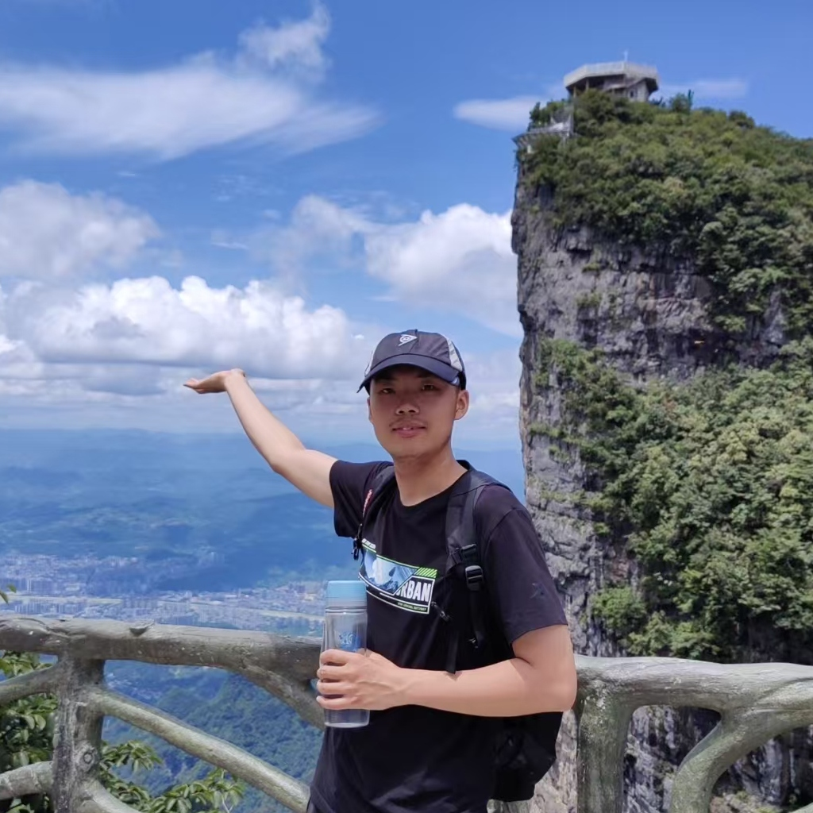
Scientific Advisors

Research Scientist; physics foundation models and agentic AI for scientific workflows. Designs the agent-enhanced adaptation strategies for Track 2.
Leads the AI for Science Center; builds research agents for autonomous discovery and the FengWu weather forecasting series.
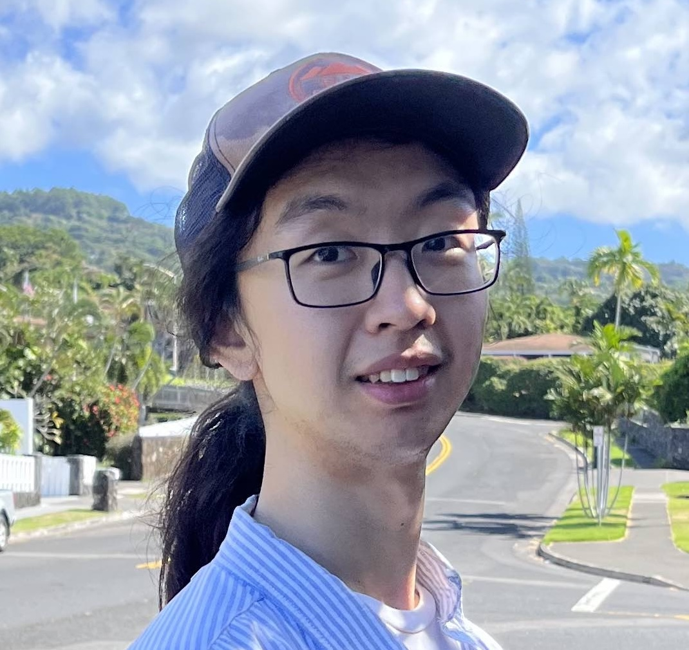
Assistant Professor of Mathematics and Data Science. Co-creator of the Fourier Neural Operator. Schmidt Science AI2050 Fellow; postdoc at MIT CSAIL with Kaiming He.
Co-founder and Chief Scientist at Emmi AI; Professor at JKU Linz. AI-driven physics surrogates for weather and climate at scale.
Associate Professor. AI for fluids: diffusion modeling, foundation models, and tightly-integrated differentiable numerical simulation.
Associate Professor at UCSD CSE. 2025 Samsung AI Researcher of the Year; PECASE and NSF CAREER awardee; MIT Technology Review Innovators Under 35. Spatiotemporal ML for science.
Bren Professor at Caltech. Previously Senior Director of AI Research at NVIDIA and Principal Scientist at AWS. Sloan Fellow, IEEE Fellow, NSF CAREER awardee.
Organized by the AI for Scientific Simulation and Discovery Lab, Westlake University, and collaborators.
Compute infrastructure: 8× NVIDIA A800 GPUs sponsored by the organizers for Codabench evaluation.